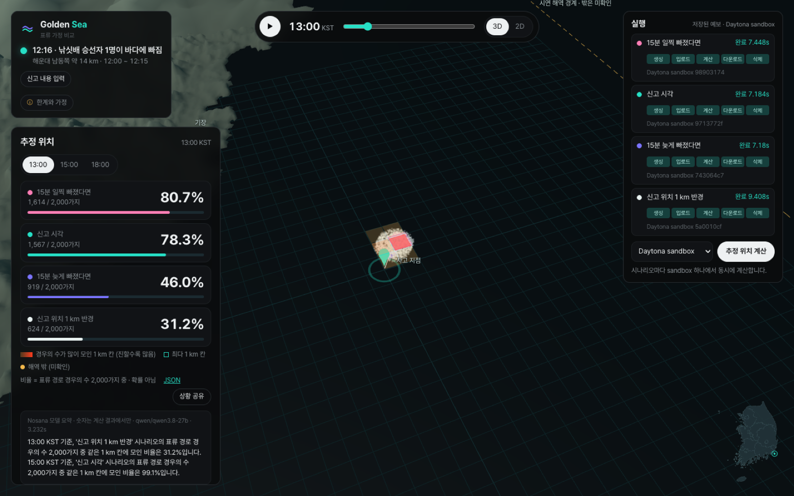

신고만으로는 사람이 빠진 정확한 위치와 시각을 알기 어렵습니다. Golden Sea는 위치와 시각 가정을 바꿔 가며 표류를 동시에 계산하고, 결과가 얼마나 달라지는지 나란히 보여 줍니다.

지난달 오륙도 예인선 사고 때는 부산과 울산 앞바다를 수색했지만, 실종자는 100 km쯤 떨어진 포항에서 발견됐습니다.
예측 하나만 보면 그 예측이 빗나갔을 때 다른 곳을 볼 근거가 없습니다.
신고된 위치와 시각을 기준안으로 두고, 위치를 반경 1 km로 넓힌 경우와 시각을 12:30까지 늦춘 경우를 만듭니다.
시나리오마다 sandbox를 하나씩 띄워 같은 엔진으로 표류 경로 경우의 수 2,000가지를 6시간 계산합니다. 하나당 7~10초 걸렸습니다.
경우의 수가 가장 많이 모인 1 km 칸을 비교하고, Nosana 모델이 계산된 숫자로만 요약을 씁니다.
표류 경로 경우의 수 2,000가지 중 몇 %가 같은 1 km 칸에 모였는지입니다. 발견이나 생존 확률은 아닙니다. 해역을 벗어난 경로는 미확인으로 셉니다.